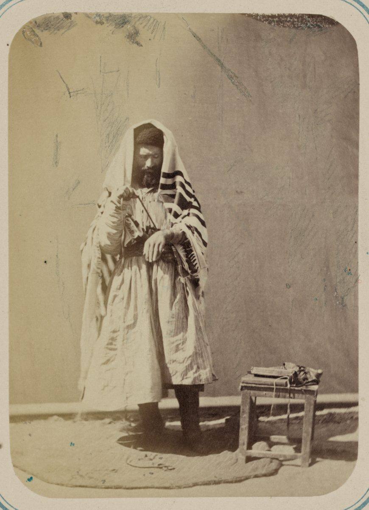

Numbers 15 — The Mister Translation

⚠ Not a scene from this chapter, and not ancient — a photograph taken in Samarkand between 1865 and 1872 for the ethnographical part of the Turkestan Album, a Russian imperial survey of Central Asia. It is here because it shows v38 being kept. The fringes hanging at both hips are tsitsit, tied to the corners of the garment exactly as this chapter commands, on a Bukharan Jew roughly three thousand years and three thousand miles from the wilderness where the commandment was given. The chapter ends by asking for something a person will see every day and remember; this is what that has actually looked like.
{kind=link}
Numbers 15:2 — ‘when you come into the land’: a law addressed to people who have just been told they will never get there
Nothing in the Hebrew marks a break. Numbers 14 ends with a generation sentenced to die in the wilderness and a failed attack beaten back as far as Hormah; the next words out of God’s mouth are ki tavo’u el-eretz moshvoteikhem asher ani noten lakhem — ‘when you come into the land of your dwellings, which I am giving to you.’ Not if. Not your children will. The verb is plural and the addressees are the same congregation that was told, eleven verses earlier, that their carcasses would fall in that wilderness.
⚠ Two readings, and this project does not vote between them. The Jewish interpretive tradition takes the juxtaposition as deliberate and as comfort: the sentence fell on the fathers, the land still stands at the end of it, and a law about what to do in the land is a promise that somebody will be there to keep it. The other reading is documentary — that a block of priestly legislation has been set down here between two narratives, and the join is an editor’s, not an author’s. Both are readings of the same fact: this chapter is legislation for a country, dropped into the middle of a book about not reaching it.
The word for what they will come into is not ‘the land’ but eretz moshvoteikhem, the land of your DWELLINGS — moshav, a sitting-place, from yashav, to sit or settle. It is domestic vocabulary, not military. The chapter that follows assumes herds, flocks, vineyards, threshing-floors and kitchens; it is written for people with an address. KJV ‘the land of your habitations’, ASV the same; NIV flattens it to ‘the land I am giving you as a home’.
V3’s l’falle-neder is a phrase this project has already met. The root is pala, the wonder-root — the one behind ‘is anything too wondrous for Jehovah?’ — and in this stem it means to set something apart, to make it explicit rather than ordinary. Numbers 6:2 (already on these pages) used the same root of the Nazirite: ‘when a man or a woman makes a special vow’. The rendering here matches that one, because it is the same idea — a vow singled out and stated, not merely felt. The shelf divides almost evenly: KJV ‘in performing a vow’, Geneva ‘to fulfill a vow’, ASV ‘to accomplish a vow’ and Douay-Rheims ‘paying your vows’ all read it as DISCHARGING a vow already made, while NIV ‘for special vows’ and NWT 1984 ‘a special vow’ read the root as marking the vow’s character. Both senses are live in the verse; this translation keeps both by keeping the whole phrase.
Reach nichoach is rendered ‘a soothing aroma’ here, as at Leviticus 1:9 and Exodus 29:41 already on these pages, and mo’adim as ‘appointed times’, as at Leviticus 23:2. Consistency across chapters is the point of keeping a fixed list.
Numbers 15:4-12 — the sliding scale: what a lamb, a ram and a bull each cost in flour, oil and wine
The arithmetic is easier to see in a column than in a paragraph, and the text expects you to do it:
a lamb — a tenth of fine flour, a quarter-hin of oil, a quarter-hin of wine.
a ram — two tenths of fine flour, a third of a hin of oil, a third of a hin of wine.
a bull — three tenths of fine flour, half a hin of oil, half a hin of wine.
What is new here is not the grain offering but the requirement. Leviticus 2 (already on these pages) legislated the grain offering as an offering in its own right, something a person could bring by itself. Exodus 29:40 attached flour, oil and wine to the twice-daily lamb of the tabernacle service. This chapter takes that pairing and makes it general: from now on every burnt-offering and every sacrifice of the kinds listed comes with its own bread and its own wine, in a fixed measure that rises with the animal. An offering stops being one thing and becomes a meal.
⚠ The Hebrew never says ‘of an ephah’. It says issaron, ‘a tenth’, and leaves the unit to be understood; every version on the shelf supplies it, and so does this one, because a bare ‘a tenth’ in English means nothing at all. The drink offering is nesekh, from nasakh, to pour — wine poured out beside the altar rather than drunk.
The shelf’s oldest archaism sits in this passage. KJV calls the minchah a ‘meat offering’ throughout — not flesh, but the older English sense of meat as food in general, the same word behind ‘meat and drink’. It is the single most misleading survival in the King James vocabulary of sacrifice, since the one offering in the system with no animal in it is the one it calls meat. Geneva has it too; ASV corrects to ‘meal-offering’, NWT 1984 and NIV to ‘grain offering’, which is what it is.
V12 closes the section by saying the same thing twice — ka-mispar asher ta’asu… ke-misparam, ‘according to the number that you prepare… according to their number’. Hebrew legal prose does this when it wants no room left: whatever you bring, multiply the accompaniment by the same count. Nobody scales down for a crowd.
Numbers 15:15-16 — ‘one statute for you and for the sojourner’: a promise two earlier chapters on these pages made in writing
This is a debt collected. Exodus 12:49, on the night of the Passover, said ‘one law shall there be for the native and for the sojourner who sojourns among you’, and this project’s note there flagged that the formula returns at Numbers 15:15-16. Leviticus 24:22 said it a second time, and its closing block promised the same third repetition. Here it is — and it is not merely repeated, it is piled up: one statute for you and the sojourner (v15), a statute forever (v15), as you are so shall the sojourner be before Jehovah (v15), one law and one ordinance (v16), and then once more after the error-laws, one law for the one who acts through error (v29). Five statements of the same principle inside fifteen verses. No other idea in the chapter is insisted on that hard.
⚠ V15 opens with a bump that every version smooths differently, and the differences are worth seeing side by side. The Hebrew begins with a bare noun — ha-qahal, ‘the assembly’ — and then starts a new clause: ‘the assembly: one statute for you and for the sojourner’. It hangs there without a verb or a preposition to govern it. KJV attaches it to the addressee (‘both for you of the congregation’); ASV makes it a heading (‘For the assembly, there shall be one statute’); NIV promotes it to subject (‘The community is to have the same rules’); NWT 1984 turns it into an appositive on ‘you’ (‘YOU who are of the congregation…’). Four solutions, one bump. This translation leaves the noun standing where the Hebrew leaves it, with a colon, because the reader is entitled to see the seam rather than one committee’s repair of it.
⚠ A versification divergence reopens here, and it is the same shelf that opened one at Numbers 13. The Douay-Rheims, translating the Vulgate, redivides this passage: it compresses the Hebrew’s vv13-16 into three verses of its own, so that its v16 already carries the Hebrew’s v17 (‘And the Lord spoke to Moses’), and the offset runs on until the two fall back into step at v21. Numbers 14’s own closing block noted that the Numbers 13 divergence had closed by the start of that chapter; it reopens here and closes again eight verses later. A reader checking a reference against a Douay-Rheims in this stretch will be a verse out.
What the law grants, and what it does not. The ger may bring the same offering, on the same terms, for the same acceptance — and v26 and v29 extend the atonement for error to him as well. That is genuine and it is unusual in the ancient world. But this project’s own dictionary entry for the word is the limit on how far it can be pressed: a ger is a resident foreigner, protected by law and without land. The equality here is cultic and judicial, not political, and the chapter is not a statement about citizenship in any modern sense. It is a statement that the altar does not check where you were born.
Numbers 15:20 — challah, the loaf of first dough, and the one offering in this chapter nobody leaves home to make
Everything else in Numbers 15 is carried to a sanctuary and handled by a priest. This is not. A household kneads its dough, lifts a piece out of it before it is baked, and gives that away — and the law is stated in nine Hebrew words with no altar in them.
The word for what is lifted out is terumah, a contribution — from rum, to raise; not a gesture of hoisting so much as a portion formally singled out of a larger whole. The verb in the verse is from the same root (tarimu, ‘you shall lift out’), so the sentence says lift-out a lifting-out, twice in v20 and once more in v21. KJV and ASV and Geneva all print ‘heave offering’, an English coinage that has since acquired a physical ritual meaning the Hebrew does not require; NWT 1984 ‘contribution’ and NIV ‘offering’ are both closer to the plain sense, and this is one of the places where the least familiar-sounding version on the shelf is the most accurate one.
⚠ The piece itself is a challah, and the word has outlived the law. It is the ordinary Hebrew for a round baked loaf, and it is still the name of the plaited bread on a Jewish Sabbath table — named not for its shape but for this verse, because the dough it is made from is dough from which a challah has been separated. The separating is still done; the portion is burned rather than given to a priest, there being no priest to give it to. The etymology behind the word is less settled than its afterlife: it is often derived from chalal, to pierce or bore through, which would make it a perforated or ring-shaped cake, and that is the reading behind NWT 1984 ‘ring-shaped cakes’ and TNM ‘roscas de pan’. It is a real proposal and not a certainty, so this translation prints the plain ‘loaf’ that KJV, ASV and NIV also print, and leaves the ring in the note where an uncertain etymology belongs.
The other word here is genuinely rare, and its two other appearances are both this law being quoted back. Arisah, the dough, occurs in exactly four verses in the whole Hebrew Bible: v20 and v21 here, and then Nehemiah 10:38 and Ezekiel 44:30 (neither yet on these pages). Both of those are citations — Nehemiah’s returned exiles binding themselves to bring ‘the first of our dough’ to the priests, and Ezekiel’s temple vision assigning it to the priest so that ‘a blessing may rest on your house’. A word this rare, surviving only in the law that coined it and the two later texts that keep it, is about as clean a case as the Hebrew Bible offers of a small domestic rule that was actually kept.
Numbers 15:22-29 — shegagah, ‘through error’, and a rite that does not match Leviticus 4
One word governs eight verses. Shegagah — a straying, an act done without meaning it — appears nine times in vv22-29, and everything the passage offers is offered to it and to nothing else. Leviticus 4 (already on these pages) built its whole sin-offering system on the same word, and this project’s note there said in as many words that a different and harsher category existed for the deliberate sin, naming Numbers 15:30-31 as the place it would be found. Seven verses from now, it is.
⚠ V24 says the error was hidden from the congregation’s EYES, and most of the shelf will not let it. The Hebrew is me-einei ha-edah — literally ‘from the eyes of the congregation’ — and it is the same idiom Leviticus 4:13 uses, with one small switch worth noticing: Leviticus hides the matter from the eyes of the qahal, the assembly, and Numbers hides it from the eyes of the edah, the congregation. Both are on these pages and both keep the eyes. The shelf mostly does not: KJV ‘without the knowledge of the congregation’, ASV the same, Geneva ‘committed ignorantly of the Congregation’, NIV ‘without the community being aware of it’, RV60 ‘con ignorancia de la congregación’. Two versions keep the eyes, one on each shelf, and they are the same translation in two languages — NWT 1984 ‘far from the eyes of the assembly’ and TNM ‘lejos de los ojos de la asamblea’. This is one of the cases the standing rule on this site exists for: the version with the doctrinal reputation is here simply the most literal one, and it is right. It matters because the eyes are not decoration in this chapter — they come back in v39, and by then they will have done real damage.
⚠ The congregational rite here is NOT the congregational rite of Leviticus 4, and the difference is not a translation problem. Leviticus 4:14 has the assembly bring a young bull as a sin-offering, and that is the whole animal requirement. Numbers 15:24 has the congregation bring a young bull as a burnt-offering, with its grain offering and drink offering — and a male goat as the sin-offering. Two laws for one case, differing in the animals, in what each animal is for, and in the count. The traditional harmonisation is worked out in the Talmud's tractate Horayot, which reads this passage as covering unintentional IDOLATRY specifically — an error against the whole covenant rather than against one commandment — and leaves Leviticus 4 for the single-commandment case, where the community has acted on a mistaken ruling of its own court. The source-critical reading takes them as two priestly formulations of the same law preserved side by side. This project reports both and adopts neither; what is not in doubt is that the two chapters, read plainly and in English, prescribe different offerings.
The individual’s case, by contrast, matches Leviticus almost exactly. V27’s she-goat is Leviticus 4:28’s she-goat, with one detail added here — bat shenatah, in its first year. So the disagreement between the two chapters is confined to the congregation. Whatever produced it, it did not touch the private case.
‘And it shall be forgiven them’ — ve-nislach, from salach, three times in vv25, 26 and 28. That verb has only ever had one subject in the Hebrew Bible, and Numbers 14:20, four verses of narrative ago, is its most famous appearance: salachti kidvarekha, ‘I have forgiven, according to your word’ — granted to Moses and followed immediately by the word ‘but’. Here the same verb is handed out three times in five verses with no ‘but’ anywhere near it. The pardon that had to be begged for by a prophet in chapter 14 is, in chapter 15, simply the published procedure.
Numbers 15:30 — b’yad ramah, ‘with a high hand’: the same two words that describe Israel marching out of Egypt
The idiom is a raised hand: the arm up, the gesture of someone who is not hiding what they are doing. And it is not a rare phrase whose sense has to be reconstructed — it occurs elsewhere in the Torah, and the other places are the reason this one lands so hard. Exodus 14:8 (already on these pages): ‘the children of Israel went out b’yad ramah’. Numbers 33:3 (not yet on these pages), retelling the same morning: they went out b’yad ramah, in the sight of all Egypt. Identical two words. There it is the nation walking out of slavery with its head up, and it is glorious. Here it is one person doing a forbidden thing in the open, and there is no sacrifice for it.
⚠ On the English shelf only the ASV keeps the hand; on the Spanish shelf only the oldest Reina-Valera does — and that convergence is the finding. ASV ‘with a high hand’; KJV and Geneva ‘presumptuously’; NIV ‘defiantly’; NWT 1984 ‘deliberately’; Douay-Rheims ‘through pride’. In Spanish the 1909 Reina-Valera reads ‘con altiva mano’, a high hand and nothing else, while RV60 gives ‘con soberbia’, NVI and TNM ‘deliberadamente’. Ten versions, and the two that keep the gesture are the two oldest-register witnesses, one per language. Every modern translation on both shelves has decided the reader would rather have the meaning than the picture. The cost is the link to Exodus 14, which cannot survive ‘defiantly’.
What the high-handed person is said to be doing is megaddef, reviling. The root is used of insulting speech aimed at God, and this is its only appearance in Numbers. The verse does not say the man SAID anything: it says that acting this way IS reviling. KJV ‘reproacheth’, ASV and NIV ‘blasphemes’, NWT 1984 ‘speaking abusively of’. The Douay-Rheims alone loses it entirely, reading ‘because he hath been rebellious against the Lord’ — a Vulgate divergence rather than a Hebrew one, and the sort of thing that entry on the shelf exists to show.
The sentence is karet, and v31 states it with the infinitive absolute — hikkaret tikkaret, cutting-off he shall be cut off, the Hebrew way of leaving no room to argue. KJV ‘shall utterly be cut off’, NWT 1984 ‘cut off without fail’. ⚠ And it is worth saying plainly what the law does NOT supply: no court, no witnesses, no executioner, no method. Every other capital provision in the Torah names a procedure; this one names none, which is why the tradition reads karet as a penalty God carries out rather than a sentence a human body passes. The very next paragraph will describe a killing in which the procedure is spelled out in full — and it is a different case entirely, whatever the arrangement of the page suggests.
The last three words of v31 are odd in Hebrew and worth keeping odd. Avonah vah — ‘her guilt is in her’ — feminine, because nefesh, the person, is a feminine noun. English has no way to carry that without inventing a gender the verse is not assigning, so this translation reads ‘his guilt is upon him’ with the rest of the shelf; but the picture in the Hebrew is not of guilt lying on top of someone. It is of guilt still inside the person, because there is now no rite that takes it out. Numbers 14 spent a chapter on nasa, the verb for picking a thing up and carrying it, and made the point that in Hebrew forgiving and punishing are the same action performed by different parties. This is the case where nobody picks it up.
Numbers 15:32-36 — the man gathering sticks: the third of the Torah’s four cases where a law is made in answer to a question
Numbers 9 (already on these pages) set out the whole set: four moments in the Torah where a case arises that Moses cannot decide, and the law is made in response to it. Two are petitions from people asking to be let in — the men unable to keep the Passover, and later the daughters of Zelophehad asking for their father’s inheritance. Two are offenders held while Moses waits to learn the sentence — the blasphemer of Leviticus 24, and this man. This is the third of the four, and the second of the two prosecutions.
⚠ Something in the scribal layout binds all four together, and it can be checked in the Hebrew text of any printed Masoretic Bible. Each of the four carries a paragraph break at exactly the same narrative moment — the instant the question has been asked and the answer is not yet known. Numbers 9:8, ‘stand, and let me hear what Jehovah will command concerning you’: break. Leviticus 24:12, ‘and they put him in ward, that it might be made clear to them at the mouth of Jehovah’: break. Here at v34, ‘because it had not been made clear what should be done to him’: break. Numbers 27:5, ‘and Moses brought their case before Jehovah’: break. Four cases, four breaks, all in the same place in the story. To be exact about it, three of them are the full petuchah and this one is the lesser setumah — a smaller pause, but a pause. Whatever the scribes who fixed this layout thought they were marking, the effect is that the page itself stops where the text stops knowing.
Leviticus 24:12 and this verse are told in nearly the same words, and the overlap is at the level of the roots. Leviticus: vayyannichuhu ba-mishmar lifrosh lahem. Numbers: vayyannichu oto ba-mishmar ki lo forash. The same verb for setting him down, the identical phrase ‘in custody’, and the same root parash for the ruling — Leviticus in the infinitive, for the purpose of the waiting, Numbers in the passive, for the reason. One says what they were waiting FOR; the other says what they did not have.
And v33 uses a verb this chapter has already spent thirteen verses on. The men who found him brought him near — vayyaqrivu oto, the causative of qarav, which is the exact verb used eight times in vv4-27 for bringing an offering near to Jehovah. Numbers 27:5 will use it a third way again, for bringing a legal CASE near. The chapter does not comment on it, and this is not an argument that the man is being described as a sacrifice; it is an observation that Hebrew has one word for approaching with something in your hands, and that this chapter uses it for grain, for wine, for a goat, and then for a person.
⚠ What the text says, and what readers have added to it. It says he was found gathering sticks on the sabbath, that he was brought in, held, and executed by stoning outside the camp at God’s explicit word. It does not say he was warned, or what he intended, or what the sticks were for, or that he was defiant. The placement immediately after vv30-31 has been read, for a very long time, as an illustration of the high-handed sin — and that reading is natural, because a chapter that has just said the deliberate sinner is cut off then shows a man being cut off. But the text never applies the phrase to him, never calls him megaddef, and reaches for a penalty (execution by the whole congregation) that vv30-31 do not mention. The connection is a reading. It is a good one; it is not a statement.
What was unclear was probably not whether he should die. Exodus 31:14-15 and Exodus 35:2 (both already on these pages) had already said three times that whoever works on the sabbath shall be put to death. The gap the chapter reports is narrower than the one modern readers usually assume: ma ye’aseh lo, ‘what should be DONE to him’ — by what means, by whom, and where. That is what v35 answers, in that order: stoning, by the whole congregation, outside the camp. Some read the uncertainty more broadly, as covering whether gathering sticks amounted to work at all; the Hebrew will carry either, and the answer given addresses the manner.
⚠ This is one of the passages most often produced as evidence of the Hebrew Bible’s cruelty, and there is no reading of it that makes a man dead over firewood comfortable. What can be said accurately is what the chapter itself does with it: it is the shortest narrative in Numbers 15, it names nobody, it records no speech from the accused, and it is followed immediately by a commandment about remembering — a piece of blue thread meant to stop exactly the kind of drift that ends in front of a congregation with stones.
Numbers 15:39 — v’lo taturu, ‘do not go scouting’: the verb of the twelve spies, turned into a commandment
This is the chapter’s best-kept secret and no version on either shelf prints it.
Tur is the governing verb of the two chapters immediately before this one. It occurs seven times in Numbers 13 — send men to scout the land, Moses sent them to scout, they went up and scouted it, they returned from scouting, the land which we scouted — and five more times in Numbers 14, including the sentence itself: ‘by the number of the days you SCOUTED the land, forty days, a day for a year, you will bear your iniquities’. Twelve occurrences in two chapters, every one of them about twelve men looking at a country and coming back with an opinion. It then appears exactly once more in this stretch of the Torah, in v39, negated, and no longer about a country: v’lo taturu acharei levavkhem v’acharei eineikhem — and you shall not go scouting after your own heart and after your own eyes.
⚠ Eleven versions, eleven paraphrases, and not one scout among them. KJV and Geneva ‘seek not after’; ASV ‘follow not after’; NIV ‘chasing after the lusts of’; Douay-Rheims ‘not follow their own thoughts’; TLB ‘going your own ways’; NWT 1984 ‘go about following’; and on the Spanish shelf RV60 and the 1909 Reina-Valera ‘no miréis en pos de’, NVI ‘dejarse llevar por los impulsos’, TNM ‘andar siguiendo’. Every one of them is a defensible rendering of what the verb means in this sentence. Together they cost the reader the only thing in the verse that ties it to the disaster it follows. This translation prints ‘go scouting’ for the same reason the tur entry already gives for Numbers 13: one Hebrew verb, one English word, so that the reader can see it is the same verb.
The eyes were already the problem. Numbers 13:33: ‘and in our own eyes we were like grasshoppers, and so we were in their eyes’ — a report about a country that turns out, at the end of the sentence, to be a report about how the reporters felt. V24 of this chapter hid a sin from the congregation’s eyes. And now a piece of thread is prescribed against the eyes: u-re’item oto u-zekhartem, you shall SEE it and REMEMBER. The remedy for a bad look is another look, at something small and deliberately placed where you cannot avoid seeing it. The other verb of v39, zonim, ‘after which you go whoring’, is likewise a word from next door: its only appearance in Numbers 14 is the sons who will bear their fathers’ whoredoms.
The thing itself. Tsitsit is a tassel or lock — the word is used elsewhere of a lock of hair — tied at the kanaf, the corner, of a garment. Kanaf is also the ordinary word for a bird’s wing, and the overlap is live in Hebrew: it is the word Ruth uses when she asks Boaz to spread his kanaf over her (Ruth 3:9, not yet on these pages), where the corner of a cloak and a wing of protection are the same gesture. Into each corner goes a petil tekhelet, a cord of blue — the blue of the tabernacle’s own curtains and of the high priest’s robe. The dye is traditionally identified with a secretion of a Mediterranean sea snail; the identification was lost for centuries and has been argued back into use in the modern period on the basis of chemistry and rabbinic description together, which is a real reconstruction and worth saying so rather than presenting as continuous knowledge. KJV gives ‘a ribband of blue’, ASV ‘a cord of blue’, NIV ‘a blue cord’.
⚠ These five verses are the third paragraph of the Shema, recited morning and evening in Jewish liturgy — which makes them, by a wide margin, the most-repeated passage this project has translated so far. The other two paragraphs are both from Deuteronomy; this is the only one that is not, and it is the reason the Shema ends on a commandment about looking rather than about loving.
And this is the garment the Gospels keep describing without naming. The Greek Old Testament renders tsitsit here with kraspedon — which is the word Matthew uses three times, and which this project’s dictionary entry, written for Matthew 9:20, already promised would land here. The bleeding woman touches his kraspedon, not merely his robe; the crowds at Matthew 14:36 beg to touch it; and at Matthew 23:5 he criticises Pharisees for lengthening theirs to be seen. All three scenes are about the tassels commanded in this verse, and all three are quietly reporting that he wore them.
The chapter closes by saying ‘I am Jehovah your God’ twice in one verse, with the Exodus in between. The repetition is not a scribal slip and this translation keeps it: the sentence begins and ends on the same four words, and what sits inside them is the reason to bother remembering anything.
Notes on this translation
Decisions. The Hebrew runs 1–41 and both shelves agree on the count, but the Douay-Rheims redivides vv13–21 internally, so its numbering is a verse out from the Hebrew’s content between v16 and v20 before falling back into step — the same shelf that opened a divergence at Numbers 13. There are seven Masoretic paragraph breaks in forty-one verses, four petuchot (after vv16, 31, 36, 41) and three setumot (after vv21, 26, 34), and they fall exactly on the chapter’s joins — the offering law, the dough, the congregation’s error, the individual’s, the man in custody, his execution, the tassels. Five new dictionary entries in both languages: tsitsit the tassel, tekhelet the blue, challah the loaf whose name outlived its law, ezrach the native, and yad ramah the high hand. Eight existing entries are extended here — tur, shegagah, salach, terumah, karet, pala, kraspedon and zadon. No new encyclopedia entries: the chapter names no place and no person, and the one man in it is left deliberately unnamed. A rendering this chapter had to settle, and got wrong first. Numbers 15 uses nefesh five times in vv27–31, which forces a decision. The first draft of this chapter rendered it ‘person’ and swept four earlier verses to match, on the grounds that most of the corpus already read that way — and that reasoning does not survive the shelf. NWT 1984 reads ‘soul’ in all five verses here, KJV in all five, ASV in four of five, TNM 1987 in all five — and the versions that read ‘person’ are the LATER revisions, NWT 2013 and TNM 2019. ‘Person’ is where the modern revisions land, not where the exact ones do, and it also broke this chapter's own argument, which spends a whole note insisting that one Hebrew word should stay one English word. So the word is soul, here and in the four verses that were swept. ⚠ It is a genuinely uncomfortable word in English, because it carries a freight the Hebrew does not — an immaterial thing inside a body — and nefesh means no such thing: it is the living person, which is precisely why a nefesh can be cut off, and why the dictionary entry exists. That mismatch is the kind of strangeness this project keeps and annotates rather than smooths away; ‘that person shall be cut off’ reads easily and sends nobody anywhere. ⚠ Numbers 9:13 is the verse that settles it: the Hebrew there runs ish → nefesh → ish, and ‘the man… that person… that man’ hides a switch the sentence makes twice. And the corpus has been harmonised to match. Sixteen verses that had rendered the same legal nefesh five different ways — ‘anyone’, ‘the one who’, ‘that person’, ‘the persons’, ‘any man’ — now read ‘soul’ throughout, in both languages: Genesis 17:14, Leviticus 4:2 and 4:27, 5:1, 5:15, 5:17, 7:18, 7:20, 7:21, 7:25, 7:27, 18:29, 19:8, 22:3 and 23:29. ⚠ Three passages were deliberately left alone, because there the word does not mean the person and ‘soul’ really would change the sense: Leviticus 17:11 and 17:14, where nefesh is the LIFE that is in the blood — ‘the soul of the flesh is in the blood’ would say something the Hebrew does not — and Numbers 6:11, where al ha-nefesh is a CORPSE. So the consistency is at the level of SENSE, not of spelling, which is the only level at which it is worth having.
Echoes paid — six, and five of them were promised in writing before this chapter existed. Exodus 12:49 and Leviticus 24:22 both flagged that the ‘one law for the native and the sojourner’ formula returns here: vv15–16 and v29. Leviticus 4’s note and its shegagah entry both said the deliberate sin had its own harsher category and named vv30–31: paid. Numbers 9 listed the four cases where a law is made in answer to a question and named the wood-gatherer as one of them: vv32–36. The kraspedon entry, written for Matthew 9:20, said the tassels were commanded at Numbers 15:38–39: paid, and the three Matthew scenes now point at a verse instead of at a promise. And the sixth was not promised by anybody — tur, the scouting verb of Numbers 13 and 14, comes back in v39 as a prohibition.
Patterns worth carrying forward. Two words hold the chapter together from opposite ends. Shegagah, error, appears nine times in eight verses and is the only condition under which anything in the second half can be forgiven; the moment it stops applying, at v30, the offerings stop too, and the chapter has no rite left to offer. And the EYES run the whole length of it: hidden from the congregation’s eyes in v24, then in v39 the thing a piece of blue thread is tied on a garment to interrupt — three chapters after twelve men looked at a country and reported back on themselves. The chapter never connects the two. It just puts the remedy four verses after the execution, and the sentence that carries it uses the spies’ own verb.
Echoes planted. Numbers 27:1–11, the fourth and last case of a law made in answer to a question (now on these pages); Numbers 33:3, the second place Israel leaves Egypt ‘with a high hand’ (not yet on these pages); Deuteronomy 22:12, which commands the tassels a second time and drops the blue (not yet on these pages); Nehemiah 10:38 and Ezekiel 44:30, the two later texts that quote the dough-offering back (neither yet on these pages); and Ruth 3:9, where the kanaf that carries the tassel is a wing spread over somebody (not yet on these pages).
⚠ A note on order: Numbers stands on these pages at chapters 1, 2, 3, 4, 5, 6, 7, 8, 9, 10, 11, 12, 13, 14, 15, 16, 17, 18, 19, 20, 21, 22, 23, 24, 25, 26, 27, 28, 29, and now 30. Chapters 31–36 remain the open sequence.